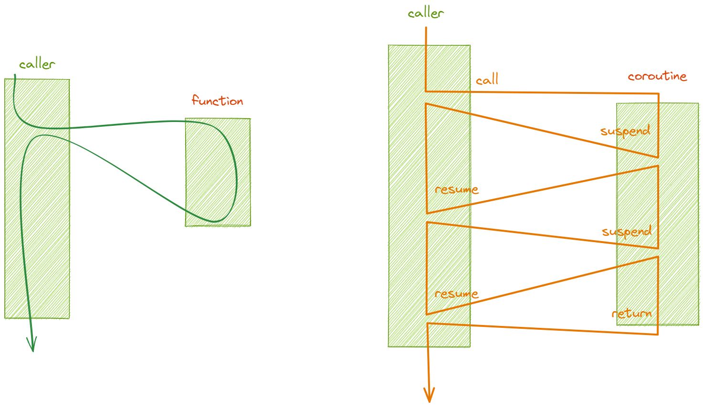

Korutyny#
“Subroutines are special cases of … coroutines.” –Donald Knuth”
Funkcja vs. Korutyna#
Korutyna jest uogólnieniem funkcji (subroutine):
Funkcja / Subroutine:
może być wywołana przez wywołującego
może zwrócić przebieg sterowania do wywołującego instrukcją
return
Korutyna / Coroutine posiada obie powyższe właściwości, ale także:
może zawiesić swoje wykonanie i przekazać kontrolę do wywołującego
zawieszona, może wznowić swoje wykonanie
W C++ funkcja może być subrutyną lub korutyną:
Subroutine |
Coroutine |
|
|---|---|---|
Invoke |
Function call |
Function call |
Return |
|
|
Suspend |
|
|
Resume |
|

Korutyną w C++20 jest funkcja, której ciało zawiera przynajmniej jedną z instrukcji:
co_returnLib::Lazy<int> f() { co_return 7; }
lub
co_awaitLib::Task<> tcp_echo_server(socket_t& socket) { using buffer_t = std::array<uint8_t, 1024>; buffer_t buffer{}; for (;;) { size_t bytes_read = co_await socket.async_read_some(buffer.data()); co_await async_write(socket, buffer.data(), bytes_read)); } }
lub
co_yieldLib::Generator<int> iota(int n = 0) { while(true) co_yield n++; }
Transformacja kodu#
Kompilator transformuje kod korutyny do opisanej standardem maszyny stanów:
ReturnType coroutine_f(Params)
{
function_body();
}
ReturnType coroutine_f(Params)
{
using promise_type = std::coroutine_traits<ReturnType, Params>::promise_type // [1]
promise_type promise(promise_constructor_arguments);
try
{
co_await promise.initial_suspend(); // [2] initial suspend point
function_body();
}
catch(...)
{
if (!initial_await_resume_called) // [3]
throw;
promise.unhandled_exception();
}
final-suspend: // final suspend point
co_await promise.final_suspend(); // [4]
}
gdzie:
[1]
promise-typeoznacza tzw. typ promise[2] wyrażenie
co_awaitzawierające wywołaniepromise.initial_suspend()to tzw. initial suspend point[3] flaga
initial_await_resume_calledjest początkowo ustawiona nafalsei przestawiona natruebezpośrednio przed ewaluacją wyrażeniaawait-resumew tzw. initial suspend point[4] wyrażenie
co-awaitzawierające wywołaniepromise.final_suspend()to tzw.final suspend point
Korutyny- czas życia#
Wywołanie funkcji#
W trakcie, gdy wywoływana jest funkcja, kompilator konstruuje tzw. ramkę stosu (stack frame), która zawiera:
argumenty wywołania funkcji
lokalne zmienne
zwracaną wartość
temporary storage for registers
Wywołanie korutyny#
Wywołanie korutyny zmusza kompilator do konstrukcji tzw. coroutine stack frame, która zawiera:
parametru formalne
zmienne lokalne
stan wykonania w przypadku, gdy korutyna jest wstrzymana (rejestry, wskaźniki instrukcji, itd.)
obiekt promise, który jest użyty do zwrócenia wartości (jednej lub kilku) do wywołującego
W ogólności ramka stosu korutyny coroutine stack frame musi być alokowana dynamicznie na stercie. Alokacja na stercie pozwala uniknąć utraty lokalnego stanu w momencie zawieszenia działania korutyny.
Do alokacji używany jest domyślnie operator new.
W niektórych sytuacjach kompilator może zrezygnować (zoptymalizować wykonanie) z dynamicznej alokacji pamięci.
Note
Utworzenie ramki korutyny następuje przed rozpoczęciem jej wykonania.
Kompilator przekazuje uchwyt (wskaźnik) do ramki korutyny do wywołującego korutynę.
Destrukcja stanu korutyny#
Stan korutyny jest niszczony, kiedy:
następuje wyjście z korutyny - przebieg programu opuszcza korutynę
lub, gdy wywołana jest metoda
destroy()uchwytu korutyny, który odwołuje się do uruchomionej korutyny
Note
Jeśli destroy() zostało wywołane dla korutyny, która nie jest w stanie zawieszenia (suspended), to program jest w stanie undefined behavior (UB)!
Uchwyt korutyny (coroutine handle)#
Uchwyt korutyny (tzw. coroutine handle) jest obiektem, który opakowuje wskaźnik do ramki korutyny, która jest alokowana stercie. Uchwyt pozwala na manipulację z zewnątrz korutyny. Dzięki niemu możemy wznawiać wykonanie zawieszonej korutyny lub ją zniszczyć operacją destroy().
Możemy wyróżnić dwa ogólne przypadki uchwytów korutyn:
Uchwyt do korutyn, które zwracają
void:
template <typename _PromiseT = void>
struct coroutine_handle;
template <>
struct coroutine_handle<void> // no promise access
{
coroutine_handle() noexcept; // it allows to construct empty coroutine_handle
coroutine_handle(nullptr_t) noexcept;
coroutine_handle& operator=(nullptr_t) noexcept;
explicit operator bool() const noexcept; // conversion - if handle is empty
static coroutine_handle from_address(void* _Addr) noexcept; // conversion function - allows to convert a pointer to handle
void* address() const noexcept; // returns pointer to coroutine handle
void operator()() const; // it allows to resume the execution
void resume() const; // the same as operator()() - resumes the execution
void destroy(); // allows to manually destroy the coroutine
bool done() const; // tests whether the coroutine has completed execution
private:
void* ptr_; // a pointer to a coroutine stack frame
};
Uchwyt do korutyn, które zwracają jakąś wartość. W tym przypadku dostarczana jest specjalizacja szablonu
coroutine_handle:
template <typename Promise>
struct coroutine_handle : coroutine_handle<void>
{
Promise& promise() const noexcept; // gets the promise back
static coroutine_handle from_promise(Promise&) noexcept; // returns a handle from the promise object
};
Note
Ponieważ obiekt promise jest konstruowany w ramce korutyny, znając obiekt promise<T>, możemy otrzymać odpowiedni uchwyt typu coroutine_handle<T>.
Otrzymywanie uchwytu do korutyny (dostęp do ramki korutyny)#
Uchwyt korutyny coroutine_handle możemy otrzymać na dwa sposoby:
jest on przekazany do metody
await_suspend()awaiter’a podczas wykonania wyrażeniaco_await- po zawieszeniu korytyny (można przekazany uchwyt traktować jako uchwyt do kontynuacji continuation-passing)mając referencję do obiektu promise korutyny, możemy odtworzyć jej uchwyt za pomocą metody
coroutine_handle<Promise>::from_promise()
Note
Uchwyt typu std::coroutine_handle NIE jest obiektem RAII. Należy ręcznie wywołać operację destroy(), aby zwolnić zasoby (ramkę korutyny).
Można traktować uchwyt jako odpowiednik void*.
Taka implementacja wynika z przyczyn związanych w wydajnością. Implementacja RAII byłaby zbyt kosztowna (np. reference counting).
Obiekt promise#
Obiekt promise umożliwia manipulację z wnętrza korutyny. Jest to tzw. customization point odpowiedzialny za:
zwrócenie obiektu interfejsu korutyny z punktu startu
określenie, czy natychmiast zawiesić korutynę po starcie
określenie, czy zawiesić korutynę na końcu
obsługę wyjątków w trakcie działanie korutyny
obsługę zwracanych z korutyny wartości
Obiekt ten jest alokowany w ramce korutyny.
Interfejs obiektu promise zawiera:
constructor/destructor (RAII)
get_return_object()- ta funkcja jest wykorzystana do inicjalizacji obiektu zwracanego do wywołującego korutynęget_return_object_on_allocation_failure()funkcji implementujących transfer wyniku/wyjątku z korutyny do wywołującego
co_return:return_value(),return_void()co_yield:yield_value()
co_await#
Operator unarny co_await powoduje zawieszenie (suspends) korutyny i powrót to wywołującego.
Wyrażenie co_await jest transformowane (rozwijane) przez kompilator do następującego kodu:
auto r = co_await expr;
auto r = {
auto&& awaiter = expr;
if (!awaiter.await_ready())
{
__builtin_coro_save(); // frame->suspend_index = n;
awaiter.await_suspend(<coroutine_handle>);
__builtin_coro_suspend(); // jmp epilog
}
resume_label_n:
awaiter.await_resume();
};
Wyrażenie, które następuje po operatorze co_await jest konwertowane do tzw. obiektu awaitable.
Jeśli korutyna zastała zawieszona w wyrażeniu co_await i później wznowiona (operacją resume()), to punkt wznowienia znajduje się bezpośrednio przed wywołaniem operacji awaiter.resume().
Awaitable object#
Aby można było oczekiwać na “coś” typ awaitable musi spełniać koncept awaitable:
template <typename T>
concept awaitable = requires(T obj) {
{ obj.await_ready(); } -> std::convertible_to<bool>;
{ obj.await_suspend(coroutine_handle<>); };
{ obj.await_resume(); }
};
When the awaiter object is created, then the awaiter.await_ready() is called. This is a short-cut to avoid the cost of suspension if the result is ready or can be completed synchronously.
If the returned result is false, then the coroutine is suspended and awaiter.await_suspend(coroutine_handle<P>) is called. Inside this function the suspended coroutine state is observable via coroutine handle. The responsibility of this function it to schedule the coroutine to resume on some executor (or to be destroyed).
if
await_suspend()returnsvoid, control is immediately returned to the caller/resumer of the current coroutine (this coroutine remains suspended), otherwiseif
await_suspend()returnsbool,the value
truereturns control to the caller/resumer of the current coroutinethe value
falseresumes the current coroutine
if
await_suspend()returns a coroutine handle for some other coroutine, that handle is resumed (by a call tohandle.resume()) (this may chain to eventually cause the current coroutine to resume)if
await_suspend()throws an exception, the exception is caught, the coroutine is resumed, and the exception is immediately re-thrown
Finally, awaiter.await_resume() is called, and its result is the result of the whole co_await expr expression.
Note
Because the coroutine is fully suspended before entering awaiter.await_suspend(), that function is free to transfer the coroutine handle across threads, with no additional synchronization.
For example, it can put it inside a callback, scheduled to run on a threadpool when async I/O operation completes. In that case, since the current coroutine may have been resumed and thus executed the awaiter object’s destructor, all concurrently as await_suspend() continues its execution on the current thread, await_suspend() should treat *this as destroyed and not access it after the handle was published to other threads.
Proste typy awaitable#
suspend_always#
struct suspend_always
{
bool await_ready() noexcept
{
return false; // I don't have a value yet
}
void await_suspend(coroutine_handle<>) noexcept { }
void await_resume() noexcept { }
};
suspend_never#
struct suspend_never
{
bool await_ready() noexcept
{
return true;
}
void await_suspend(coroutine_handle<>) noexcept { }
void await_resume() noexcept { }
};
co_return#
Aby zwrócić określoną wartość z korutyny należy użyć instrukcji co_return.
Kiedy korutyna osiąga punkt wywołania co_return wykonuje następujące czynności:
wywołuje
promise.return_void()dla:co_return;co_return expr;gdyexprjest typuvoid
lub wywołuje
promise.return_value(expr)dlaco_return expr;, gdzieexprnie jest typuvoidniszczy wszystkie zmienne automatyczne (lokalne) w kolejności odwrotnej do kolejności ich inicjalizacji
wywołuje operację
promise.final_suspend()i oczekuje na rezultat za pomocą operatoraco_await
Attention
Wyjście z korutyny bez wywołania instrukcji co_return, w sytuacji, gdy typ promise nie posiada funkcji Promise::return_void() skutkuje undefined behavior!
co_yield#
Wyrażenie yield ma następującą postać:
co_yield expression;
co_await p.yield_value(expression);
Customization points for a coroutine#
The interface of promise object specifies methods for customizing the behavior of the coroutine. The library writer is able to customize:
what happens when the coroutine is called
what happens when the coroutine returns (either by normal return or via unhandled exception)
behavior of any
co_awaitorco_yieldexpression within the coroutine body
Allocating a coroutine frame#
The compiler needs to allocate memory for a coroutine frame. To achieve this it generates a call to operator new.
If the promise_type defines a custom operator new then that is called, otherwise global operator new is called.
The size passed to operator new is not sizeof(Promise) but is rather the size of the entire coroutine frame and is determined automatically by the compiler based on the number and sizes of parameters, size of the promise object, number and sizes of local variables and other compiler-specific storage needed for management of coroutine state.
The compiler is free to elide the call to operator new as an optimization if:
it is able to determine that the lifetime of the coroutine frame is strictly nested within the lifetime of the caller; and
the compiler can see the size of coroutine frame required at the call-site.
struct MyPromise
{
void* operator new(std::size_t size)
{
void* raw_mem = my_custom_allocate(size);
if (!raw_mem)
throw std::bad_alloc{};
return raw_mem;
}
void operator delete(void* raw_mem, std::size_t size)
{
my_custom_free(raw_mem, size);
}
};
Obtaining the return object#
The first thing a coroutine does with a promise object is obtain the return-object by calling promise.get_return_object().
The return-object is the value that is returned to the caller of the coroutine function then the coroutine first suspends or after it runs to completion and execution returns to the caller.
The initial-suspend point#
The next thing the coroutine executes once the coroutine frame has been initialized and the return object has been obtained is execute the statement co_await promise.initial_suspend();.
This allows the author of the promise_type to control whether the coroutine should suspend before executing the coroutine body that appears in the source code or start executing the coroutine body immediately.
If the coroutine suspends at the initial suspend point then it can be later resumed or destroyed at a time of your choosing by calling resume() or destroy() on the coroutine’s coroutine_handle.
The result of the co_await promise.initial_suspend() expression is discarded so implementations should generally return void from the await_resume() method of the awaiter.
For many types of coroutines, the initial_suspend() method either returns:
std::suspend_always(if the operation is lazily started) orstd::suspend_never(if the operation is eagerly started)
Returning to the caller#
When the coroutine function reaches its first <return-to-caller-or-resumer> point (or if no such point is reached then when execution of the coroutine runs to completion) then the return-object returned from the get_return_object() call is returned to the caller of the coroutine.
The type of the return-object doesn’t need to be the same type as the ReturnType of the coroutine function. An implicit conversion from the return-object to the ReturnType of the coroutine is performed if necessary.
Returning from the coroutine using co_return#
See co_return behavior
Handling exceptions for the coroutine body#
If an exception propagates out of the coroutine body then the exception is caught and the promise.unhandled_exception() method is called inside the catch block.
Implementations of this method typically call std::current_exception() to capture a copy of the exception to store it away to be later re-thrown in a different context.
The final-suspend point#
Once execution exits the user-defined part of the coroutine body and the result has been captured via a call to return_void(), return_value() or unhandled_exception() and any local variables have been destructed, the coroutine has an opportunity to execute some additional logic before execution is returned back to the caller/resumer.
The coroutine executes the co_await promise.final_suspend(); statement.
This allows the coroutine to execute some logic, such as publishing a result, signalling completion or resuming a continuation. It also allows the coroutine to optionally suspend immediately before execution of the coroutine runs to completion and the coroutine frame is destroyed.
Note
It is undefined behavior to resume() a coroutine that is suspended at the final_suspend point. The only thing you can do with a coroutine suspended here is destroy() it.
Note
It is recommended that you structure your coroutines so that they do suspend at final_suspend where possible.
This is because this forces you to call .destroy() on the coroutine from outside of the coroutine (typically from some RAII object destructor) and this makes it much easier for the compiler to determine when the scope of the lifetime of the coroutine-frame is nested inside the caller. This in turn makes it much more likely that the compiler can elide the memory allocation of the coroutine frame.
Customizing the behavior of co_await#
The promise type can optionally customize the behavior of every co_await expression that appears in the body of the coroutine.
By simply defining a method named await_transform() on the promise type, the compiler will then transform every co_await <expr> appearing in the body of the coroutine into co_await promise.await_transform(<expr>).
This has a number of important and powerful uses:
It lets you enable awaiting types that would not normally be awaitable.
It lets you disallow awaiting on certain types by declaring
await_transformoverloads as= delete.template<typename T> class generator_promise { ... // Disable any use of co_await within this type of coroutine. template<typename U> std::suspend_never await_transform(U&&) = delete; };
It lets you adapt and change the behavior of normally awaitable values
Customizing the behavior of co_yield#
The final thing you can customize through the promise type is the behavior of the co_yield keyword.
If the co_yield keyword appears in a coroutine then the compiler translates the expression co_yield <expr> into the expression co_await promise.yield_value(<expr>).
The promise type can therefore customize the behavior of the co_yield keyword by defining one or more yield_value() methods on the promise object.